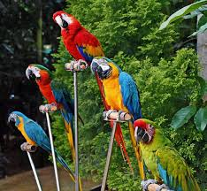
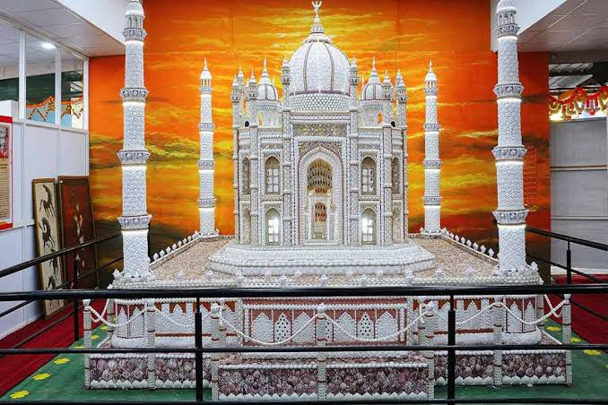
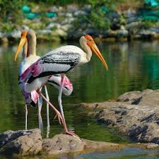
 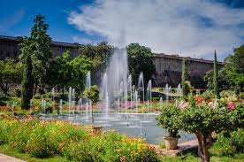
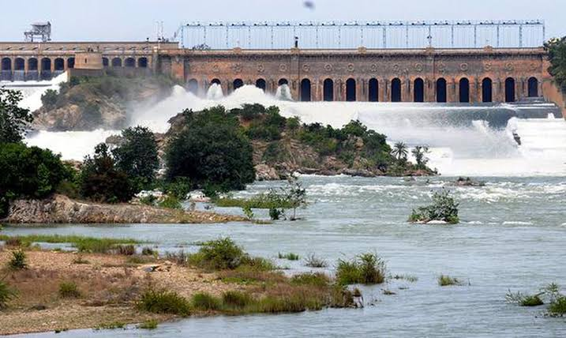
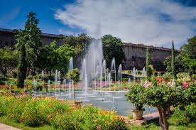
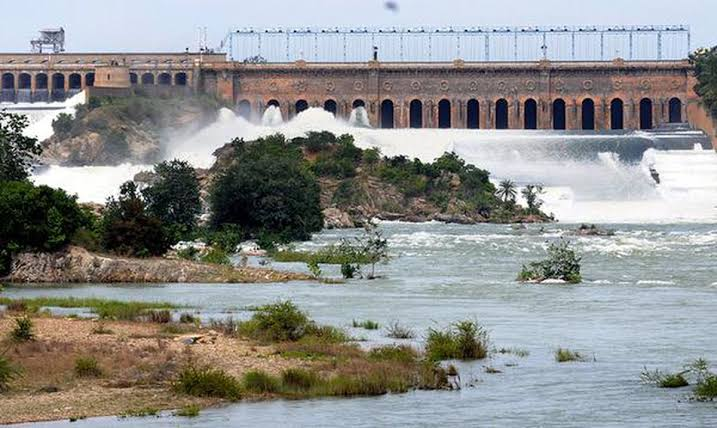
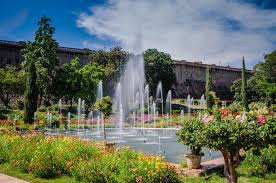
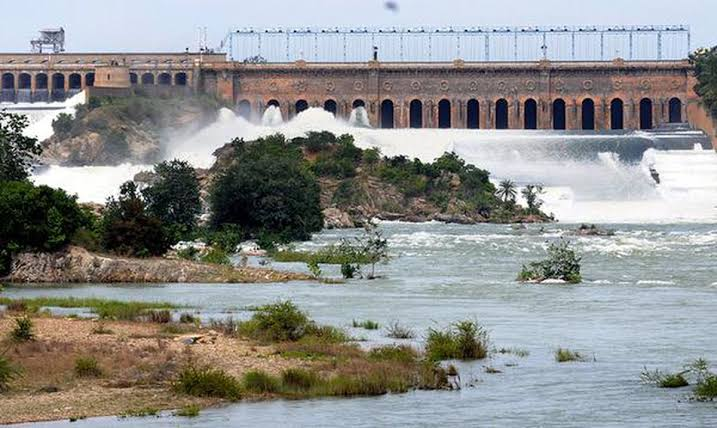
Mysore officially Mysuru is a metropolitan city in the southern Indian state of Karnataka.It is the state's third-most populous and is one of the cleanest cities in India according to Swachh Survekshan.
It is the seat of the Wadiyar dynasty and was the capital of the Kingdom of Mysore for almost six centuries, from 1399 until 1947.
It is currently the headquarters of Mysore district and Mysore division. Known for its heritage structures and palaces, including the famous Mysore Palace, and noted for its culture.
Mysore is popularly known as the "City of Palaces", the "Heritage City" and the "Cultural Capital of Karnataka". For its pristine and calm ambience, it is also known as "Pensioners' Paradise".
Nicknames: Heritage City, City of Palaces, The Cultural capital of Karnataka, Sandalwood City,City of Jasmine
Mysore is situated at the foothills of the Chamundi Hills. At an altitude of 770 m (2,530 ft) above mean sea level, the city of Mysore is geographically located at 12° 18′ 26″ north latitude and 76° 38′ 59″ east longitude.
It is about 140 km (87.0 mi) southwest of the state's capital, Bangalore, and spreads across an area of 156 km2 (60 sq mi)(City + neighbouring census towns).
The population of the city combined with its neighbouring towns in its metropolitan area is about 1,288,000 in 2023.
Most of the city's development during modern times could be attributed to the maharajas of Mysore and the Wadiyar dynasty, who were patrons of art and culture.
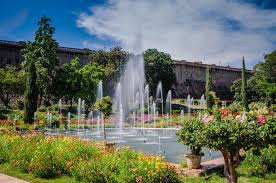
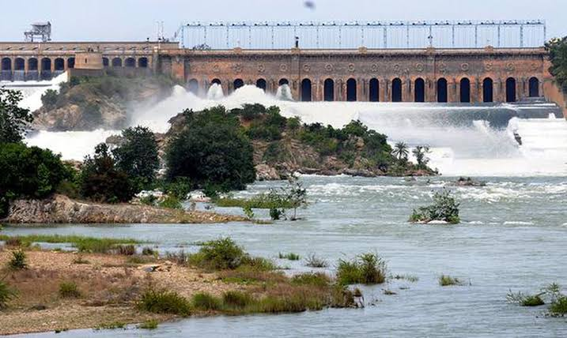